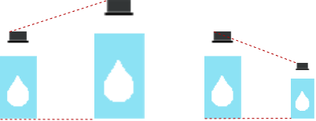
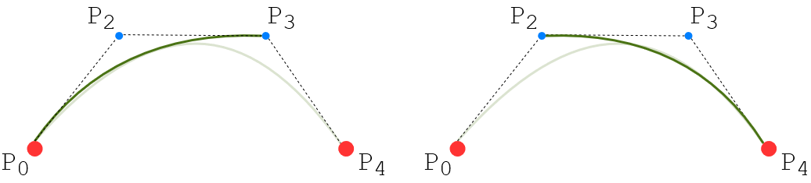
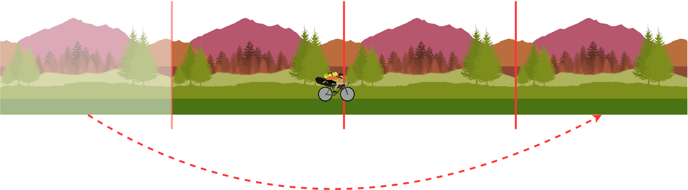

La teoria applicata al progetto verte principalmente su due argomenti:
1. Trasformazioni nel piano: applicate nella sezione relativa alla gestione di bikepacking
2. Curve di Bézier: per la generazione del terreno sono state utilizzate curve di Bézier quadratiche con incollamento G1.
Di seguito i dettagli per ciascun punto.
"A Quiet Place: Pedalando nel Bosco" è un gioco 2D quindi le trasformazioni che sono state prese in considerazione sono quelle relative al piano. Una trasformazione del piano è una corrispondenza biunivoca tra l’insieme dei punti del piano e se stesso. Questo significa che:
1. A ogni punto P corrisponde uno e un solo punto P’
2. Per ogni punto del piano P’, esiste un punto P di provenienza
3. Punti distinti vanno in punti distinti
Quello che ci interessa sapere sono gli effetti che le trasformazioni hanno sulle figure (ovvero gli oggetti inerenti al bikepacking) e soprattutto ci interessa vedere che le figure trasformate conservano le proprietà delle figure di partenza.Entriamo nel dettaglio definendo le isometrie. Le isometrie sono le trasformazioni del piano che conservano le distanze. Questo significa che se AB è la distanza tra i punti A e B, e A’B’ la distanza tra i punti trasformati, allora AB = A’B’Infatti le trasformazioni isometriche trasformano una figura in una figura congruente, in altre parole, le figure vengono spostate senza essere deformate.
Le isometrie si classificano in:
1. Traslazioni
2. Rotazioni
3. Simmetrie centrali
4. Simmetrie assiali
5. Glissosimmetrie
In una traslazione ogni punto del piano viene spostato nella stessa direzione e nello stesso verso e secondo una stessa distanza. Quindi prendendo in considerazione il punto R, una traslazione avviene grazie a un vettore w che agisce sul punto R → R+w=R'. Ciò avviene per ogni punto della figura.
Le rotazioni sono trasformazioni caratterizzate da un punto fisso (chiamato O) e dall’ampiezza di un angolo (chiamato alfa). Le rotazioni quindi:
1. Hanno un punto fisso chiamato centro di rotazione.
2. Sono tali per cui i punti e i loro corrispondenti hanno uguale distanza dal centro di rotazione.
3. Spostano tutti i punti del piano di uno stesso angolo alfa.
Un altro tipo di trasformazione che viene applicato alle figure è l’omotetia o similitudine. Questa trasformazione viene usata per fare in modo che più oggetti possano entrare all’interno delle borse della bicicletta, diminuendone la dimensione. Vediamo dal punto di vista geometrico come funziona tale trasformazione.
Una similitudine è una trasformazione geometrica affine in cui resta invariato il rapporto fra le distanze di coppie di punti corrispondenti A,B e A’,B’ ovvero:AB = k A’B’Esempio con immagine oggetto del gioco che viene ridotto
Durante la fase di progettazione della gestione del bikepacking si sono tenuti a mente 2 obiettivi principali:
1- il primo aspetto è più legato al gameplay: si volevano rendere questi momenti di gameplay il più possibile flessibili e rapidi. Tenendo in considerazione che il tempo scorre anche (e soprattutto) durante la gestione del bikepacking, si voleva evitare l'approccio tipico che viene usato solitamente negli inventari classici, in cui gli oggetti vengono posizionati su una griglia. Avere la possibilità di inserire gli oggetti senza un ordine preciso ma avendo cura di non sovraccaricare di peso una borsa piuttosto che un'altra, era la scelta più adeguata per il tipo di gameplay che si voleva raggiungere.
2- Il secondo aspetto si concentra maggiormente sul tipo di esperienza che si voleva suscitare nel giocatore. Si è cercato quindi di rappresentare questa fase, in modo più verosimile a quello che potrebbe accadere nella realtà quando si ha a che fare con la gestione di borse su una bicicletta. Gli oggetti non vengono riposti all'interno delle borse come se fossero dei blocchi unici "spigolosi" (come nel tetris) ma, seppur con tutta la pazienza che si vuole, loro conservano sempre la forma originale.
Prima di entrare nei dettagli geometrici delle curve di Bézier, è utile fare alcune considerazioni sul motivo per cui sono state inserite all’interno del progetto. Come detto in precedenza, "A Quiet Place: Pedalando nel Bosco" è un videogioco con visuale in 2D. Il giocatore si muove lungo il profilo di un percorso “collinare”. Gli strumenti che la geometria ci regala per raggiungere tale scopo sono le curve di Bézier, da sempre utilizzate nell’ambito dei videogiochi in diversi ambiti, tra cui quello relativo al videogioco in questione. Nello specifico le curve di Bézier candidate per essere implementate nel progetto sono quelle di grado 3, ovvero cubiche, così definite:
La costruzione di una curva di Bézier può essere vista come un processo iterativo e progressivo. Se iniziamo a scomporre la figura sopra, possiamo visualizzare meglio gli elementi costitutivi della curva.
Questa è una curva di Bézier lineare, di grado 1.
Mentre queste sono due curve di Bézier quadratiche. Si ottengono interpolando le due curve lineari a partire da P0P2 e P2P3.
Da qui si può già capire che interpolando queste due curve di Bézier quadratiche si ottiene la curva di Bézier cubica definita prima.
Proprio così, quindi, a partire dalle curve di Bézier di grado 1, siamo arrivati a definire una curva di Bézier di grado 3. Ovviamente per fare questo processo esiste un algoritmo apposito, chiamato algoritmo ricorsivo di De Casteljau:
E’ possibile notare fin da subito come le curve di Bézier di grado 3 vadano a formare archi di parabola, l’ideale per ottenere la rappresentazione collinare desiderata all’interno di "A Quiet Place: Pedalando nel Bosco". Inizialmente si erano considerate anche le curve quadratiche per la realizzazione del terreno, ma in seguito si è notato che l'aspetto finale risultava troppo segmentato. Con le curve di Bézier cubiche invece l'effetto è esattamente quello desiderato.
Il passo successivo nella realizzazione del terreno di gioco è quello di ottenere un percorso di una certa lunghezza. Fin da subito si può escludere la possibilità di utilizzare un’unica curva di Bézier, perché precluderebbe qualsiasi possibilità di avere un controllo locale sul percorso di gioco. Risulta quindi necessario utilizzare le curve Spline che sono curve ottenute da incollamenti di curve di Bézier consecutive. L’operazione di incollamento serve per assicurare continuità geometrica tra una curva precedente e la successiva. In questo modo, mentre il giocatore prosegue nella sua pedalata, le curve di Bézier vengono generate e incollate proceduralmente, assicurando in questo modo anche un’efficienza computazionale. Esistono diverse classi di incollamento tra 2 curve di Bézier P e Q, quella utilizzata nel progetto è la G1. La classe di incollamento G1 presenta delle condizioni meno stringenti rispetto alle altre classi, infatti prevede che nel punto di incollamento la retta tangente vari con continuità. Per questo motivo è stato scelto questo tipo di incollamento, in modo tale da aggiungere maggiore variabilità nella generazione randomica delle curve.
Nonostante la lunghezza del percorso sia fissa, si è deciso di non utilizzare un unico blocco continuo di terreno, ma si è ritenuto più vantaggioso lavorare su segmenti più piccoli, per i seguenti motivi:
1) la gestione della generazione delle curve, in questo modo, può essere gestita con maggiore semplicità e granularità. I dettagli sull'algoritmo di generazione del terreno nel paragrafo successivo.
2) la suddivisione in segmenti si adatta bene anche con la gestione dei livelli di sfondo e l'applicazione dell'effetto Parallasse. Tale tecnica viene usata per rendere più dinamico il paesaggio, facendo muovere a velocità differenti i livelli di sfondo, creando un effetto simile a quello che si prova nella realtà, quando si ammira un paesaggio mentre si è in movimento.
Quindi iniziamo definendo lo scenario di gioco che è costituito da 5 livelli di sfondo e un ultimo livello in primo piano che rappresenta il terreno di gioco su cui si muove il ciclista. Immaginiamo di avere lo scenario di gioco replicato in 3 parti di uguali dimensioni. Ognuna delle parti ha dimensione pari al campo visivo della Camera di gioco:
Quando il giocatore inizia a muoversi verso destra, anche la Camera si sposta insieme a lui. Una volta che, ciclista e Camera si saranno spostati nel segmento di scenario di gioco di destra, il segmento di sinistra viene spostato alla destra del segmento in cui si trova il giocatore. Questa semplice operazione si ripete ogni volta che il giocatore si sposta verso destra e passa il confine tra un segmento e l'altro, andando a creare un effetto di continuità del terreno. L'ulteriore vantaggio è dal punto di vista computazionale, perché gestire gestire un unico blocco di grandi dimensioni avrebbe avuto un peso maggiore sulle prestazioni di gioco.
Il seguente algoritmo viene applicato sul singolo segmento di scenario di gioco, al fine di creare il percorso relativo ad esso.
Input: posizione iniziale segmento, posizione finale segmento precedente
Output: Spline sul segmento di terreno
Step 1. Determino gli anchor point lungo il segmento di terreno: il numero di anchor point da fissare nel segmento del terreno è preimpostato da 3 a 6. In particolare vengono aumentati i numeri di anchor point per generare più curve e quindi aumentare la difficoltà (maggiore attenzione a bilanciare la bicicletta per non rovesciarsi).
Step 2. Sposto gli anchor point lungo l'asse delle y, di un offset random.
Step 3. Aggiungo due punti di controllo tra gli anchor point al fine di creare una curva di Bézier cubica.
Step 4. Anche gli punti di controllo vengono spostati di un offet sull'asse y. Fare riferimento al paragrafo "Creazione dei punti di controllo e Garantire la continuità geometrica" per dettagli sulla creazione dei punti di controllo.
Step 5. Infine viene creata la curva di Bézier cubica.
Questi step vengono applicati sul singolo segmento di terreno ogni volta che vengono spostati durante il procedimento descritto precedentemente.
1. Calcolare la distanza tra i punti di intersezione sul terreno delle rette perpendicolari degli anchor point esterni al punto di incollamento.
2. Tracciare una linea perpendicolare al terreno a partire dall'anchor point centrale.
3. In questo modo la sezione di terreno sottostante è suddivisa in due porzioni, una di destra e una di sinistra. Consideriamo la parte sinistra e dividiamo a metà questa porzione.
4. Lo stesso vale per la porzione di destra che a sua volta viene divisa a metà.
5. In questo range viene posizionato il punto di controllo: a una distanza random dall'anchor point centrale e dalla metà tracciata nei passi precedenti.
6. Dopodiché si spostano i punti di controllo di un certo offset lungo l'asse delle y.
7. E infine la curva viene generata.
Tramite questo controllo si assicura che il percorso non presenti irregolarità , ottenendo un percorso facilmente percorribile. Allo stesso tempo le curve generate non sono una uguale all'altra perché la posizione degli anchor point riceve dei parametri random che le rendono diverse di volta in volta.
Quando un segmento deve essere incollato a un segmento successivo vengono svolti i seguenti step:
Step 1. Prendere la posizione dell'ultimo punto del segmento 1 e posizionare il primo punto del segmento 2 nella stessa posizione.
Step 2. In modo simile alle operazioni per "Garantire la continuità geometrica" esposte nel paragrafo precedente, i punti di controllo vengono posizionati in modo tale rispettare il vincolo di incollamento G1.